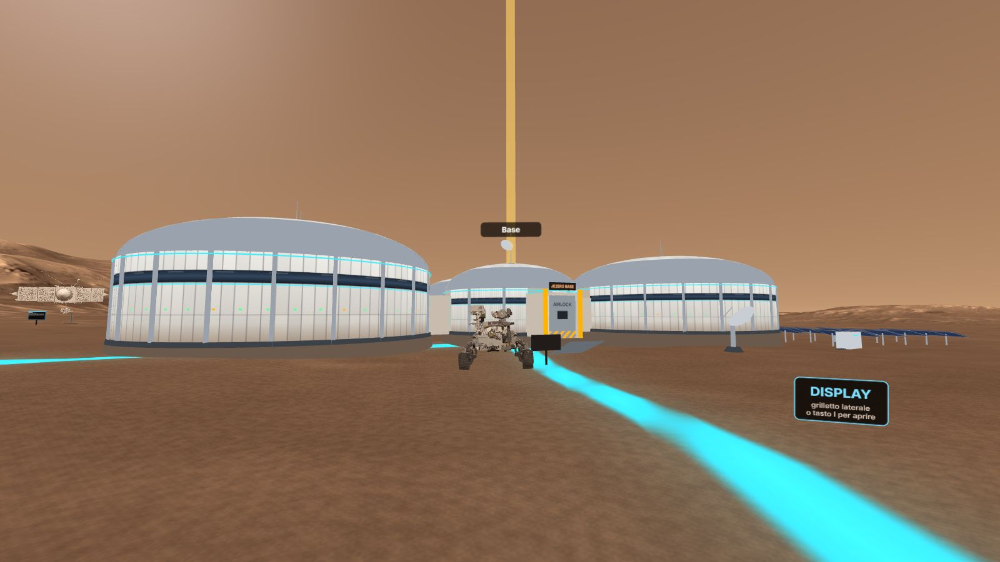
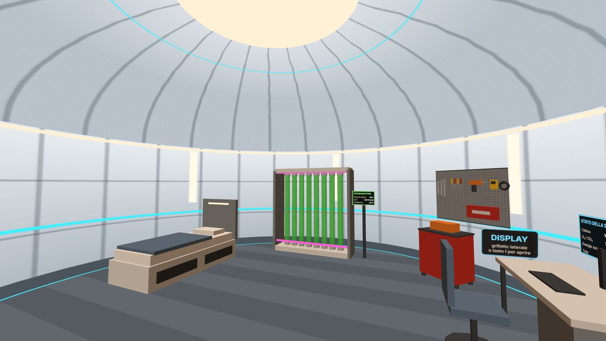
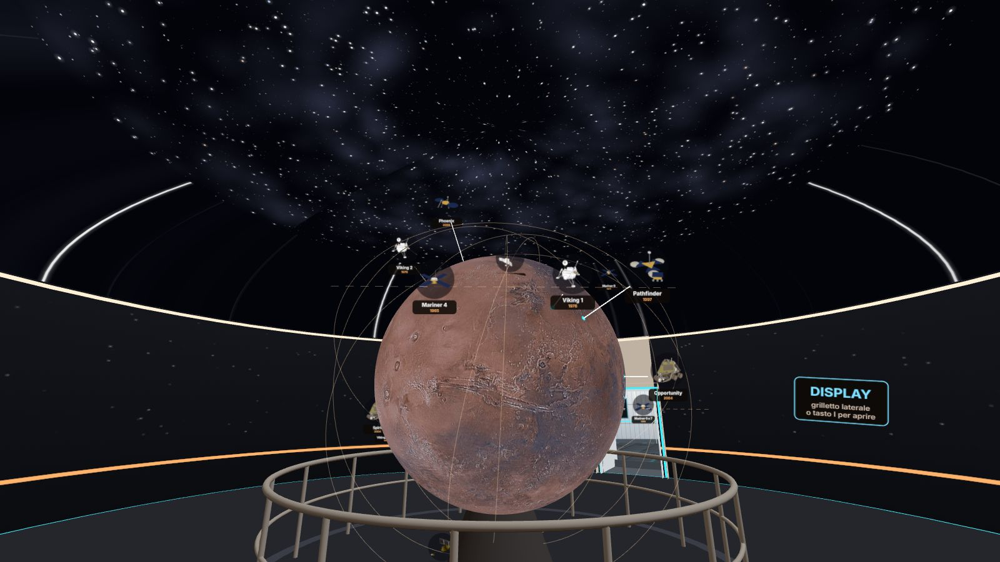
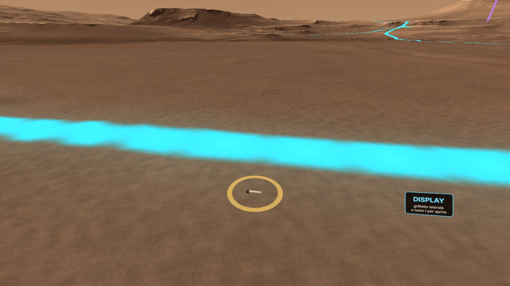

Marswalk mette chi lo usa nei panni di un astronauta della prima base su Marte. Si esce dall'airlock e si cammina su una ricostruzione in scala 1:1 del fronte del delta del cratere Jezero, lo stesso terreno che il rover Perseverance sta esplorando dal 2021. Tutto ciò che si vede per terra, dalle colline ai sassi più grandi, viene da dati reali delle sonde NASA.
La sfida Interplanetary Survival Guide: Martian Map chiede una mappa o un'interfaccia che aiuti un astronauta a muoversi in sicurezza durante un'attività extraveicolare (EVA): una zona molto circoscritta, almeno tre tipi di dati NASA, attenzione alla sicurezza, un percorso che eviti gli ostacoli e le foto dal punto di vista dei rover.
Abbiamo scelto la realtà virtuale perché un'uscita su Marte si prepara meglio camminandoci dentro che guardando una mappa. In VR si capisce subito quanto è ripida una salita, quanto è lontana la base, cosa si vede dalla cima di una collina. Le missioni Apollo hanno fatto qualcosa di simile con plastici e prove sul campo; noi usiamo i dati delle sonde in orbita per farlo prima che qualcuno metta piede su Marte.
Il cratere Jezero (circa 18,4° Nord, 77,4° Est) è largo 45 km. Circa 3,5 miliardi di anni fa ospitava un lago, alimentato da un fiume che ha lasciato un grande delta a ventaglio sul bordo occidentale. Le argille e i carbonati del delta sono tra i posti migliori su Marte per cercare tracce di vita antica: per questo Perseverance è atterrato qui il 18 febbraio 2021.
Marswalk ricostruisce la zona del fronte del delta, intorno a Three Forks e Hawksbill Gap. È qui che, tra dicembre 2022 e gennaio 2023, Perseverance ha lasciato a terra dieci provette di campioni, il primo deposito di campioni su un altro pianeta, in attesa di una futura missione di ritorno sulla Terra.
| Anello | Area | Risoluzione | Dati |
|---|---|---|---|
| Vicino | 1,6 × 1,6 km intorno alla base | 1 m (immagine 25 cm) | HiRISE, modello del terreno e foto |
| Medio | 7,2 × 7,2 km | 8 m | HiRISE |
| Lontano | 28,8 × 28,8 km, fino al bordo del cratere | 40 m | CTX |
Sul terreno è tracciato in azzurro il percorso reale del rover, con le sue posizioni ufficiali sol per sol. Le sei tappe della missione sono luoghi dove Perseverance si è davvero fermato a lavorare, e in ognuna si possono vedere le foto che il rover ha scattato proprio da lì. Una scia viola mostra il volo 42 di Ingenuity, l'elicottero che ha volato su questa stessa zona.
Marswalk è un'applicazione WebXR: si apre come un normale sito nel browser del Meta Quest 2 (o su un PC con mouse e tastiera) e con un clic entra in realtà virtuale. È scritto in JavaScript con Three.js e impacchettato con Vite; il risultato è un sito statico pubblicato su GitHub Pages.
Ora locale marziana, ossigeno e autonomia, tempo per tornare alla base, dose di radiazione, pendenza sotto i piedi, allarmi per ossigeno e tramonto.
Immagine, pendenza e pericoli, quota, minerali (CRISM) e infrarosso notturno (THEMIS), sovrapposti al terreno con il tasto L o il pulsante A.
Si sale in quota per vedere tutta la zona, pianificare e poi tornare esattamente nello stesso punto.
Legenda, mappa, fonti dei dati e riepilogo dell'uscita, consultabili senza togliere il visore.
Dal menu iniziale si sceglie la lingua (italiano o inglese), il volume dei suoni di Marte e una delle tre modalità.
| Modalità | Cosa si fa |
|---|---|
| Inizia la missione | L'uscita EVA-1 «Three Forks»: sei tappe reali (Three Forks, Cape Nukshak, Yori Pass, Wildcat Ridge, Rocky Top e ritorno) su un percorso sicuro di 2,2 km, calcolato come cammino a costo minimo sulle pendenze HiRISE in modo da evitare i tratti oltre il limite della tuta. In ogni tappa una scheda spiega cosa c'è da vedere, con le foto di Perseverance. |
| Demo campioni | Un gioco breve di recupero dei campioni (sezione 7). |
| Solo dati | Si parte dentro la base, nelle sale dei dati e delle missioni, senza uscire: utile per presentazioni e per chi non ha spazio per muoversi. |
La base è composta da quattro moduli a cupola collegati da corridoi, con un aspetto da stazione spaziale: nervature strutturali, luci LED, portali illuminati e un airlock con rampa. È un'ambientazione inventata da noi, non un progetto NASA, ma ogni oggetto all'interno è legato a dati o fatti reali.
L'airlock, le due tute in esposizione (la ACES arancione e il prototipo NASA Z-2, con le tecnologie studiate per le tute marziane) e il banco di lavoro.
Calendario sol per sol dell'attività di Perseverance con mappa, plastico interrogabile della zona, registro dei campioni, profilo del percorso, grafico del meteo MEDA, catalogo dei dati e download in GeoJSON e CSV.
Un globo di Marte che ruota sotto un soffitto stellato, con i dieci lander e rover alle coordinate reali, i percorsi dei rover, le orbite delle sonde con inclinazioni reali e i sorvoli storici.
Letto, scrivania con schermo di stato, armadietto, parete degli attrezzi (chiavi, cacciaviti, trapano, multimetro, kit di riparazione della tuta) e un fotobioreattore ad alghe.

Una persona consuma circa 0,84 kg di ossigeno al giorno. Il fotobioreattore della cabina (otto colonne di Chlorella sotto luci di crescita) produce qualche decina di grammi al giorno: da solo non basta, ed è proprio quello che spiega il pannello vicino. Si ispira al programma MELiSSA dell'ESA, che studia un ciclo chiuso di supporto vitale, e lo confronta con MOXIE, l'esperimento di Perseverance che ha prodotto 122 g di ossigeno dall'atmosfera marziana in 16 prove.

Il compito: recuperare le dieci provette che Perseverance ha lasciato al deposito di Three Forks e riportarle nella base, come prova generale della futura missione di ritorno dei campioni (Mars Sample Return, un progetto ancora in discussione).

I numeri della simulazione sono ipotesi dichiarate, tutte raccolte in pipeline/sites/jezero-delta.json, così chiunque può controllarle o cambiarle.
| Grandezza | Valore | Da dove viene |
|---|---|---|
| Velocità di cammino per i consumi | 0,7 m/s in piano | Funzione di Tobler riscalata: rallenta in salita e in discesa ripida. Ordine di grandezza delle camminate Apollo. Il giocatore cammina più veloce (1,6 m/s) per comodità. |
| Consumo metabolico | 150 W + 200 J/m | A riposo in tuta, più il cammino in piano e il lavoro contro la gravità (massa con tuta 260 kg, rendimento 25%). |
| Ossigeno | 0,6 kg, riserva 20% | Convertito dal consumo energetico: 20,1 kJ per litro di O₂. |
| Limiti di pendenza | 10°, 20°, 30° | Fasce facile, faticosa, vietata per la tuta. Il percorso sicuro evita le pendenze oltre il limite. |
| Radiazione | 0,64 mSv al giorno | Strumento RAD di Curiosity nel cratere Gale (Hassler et al., Science 2014). Valore di riferimento, non misurato a Jezero. |
| Gravità | 3,71 m/s² | Valore standard di Marte. |
| Ora e tramonto | Ora solare locale | Calcolata per il sol di partenza; dati meteo reali di MEDA. |
Tutti i dati sono pubblici e vengono da NASA, USGS e dal Planetary Data System (PDS). Nessun dato è stato generato con intelligenza artificiale.
| Dato | Missione e strumento | Fonte |
|---|---|---|
| Modello del terreno a 1 m e immagine a 25 cm | Mars Reconnaissance Orbiter, HiRISE | USGS Astrogeology, mosaici Mars 2020 Terrain Relative Navigation |
| Terreno e immagine di contesto (20 m, 6 m) | Mars Reconnaissance Orbiter, CTX | USGS Astrogeology, mosaici Mars 2020 TRN |
| Minerali (olivina, argille, carbonati), 18 m | Mars Reconnaissance Orbiter, CRISM (FRT00005C5E) | PDS Geosciences Node, prodotti MTRDR |
| Infrarosso notturno, 100 m | Mars Odyssey, THEMIS | USGS Astrogeology, mosaico globale |
| Percorso, tappe e campioni del rover | Mars 2020 Perseverance | NASA/JPL-Caltech, mappa «Where is Perseverance» (waypoint ufficiali) |
| Foto nelle tappe | Perseverance, Mastcam-Z e Navcam | NASA/JPL-Caltech/ASU, immagini raw |
| Meteo (temperatura, pressione) | Perseverance, MEDA | NASA/JPL-Caltech/CAB |
| Voli di Ingenuity | Mars 2020 Ingenuity | NASA/JPL-Caltech, registro dei voli (mappe MMGIS) |
| Suono del vento | Perseverance, microfono SuperCam | PDS Geosciences Node, registrazioni passive calibrate (sol 4, 685, 690, 697) |
| Percorsi di Spirit e Opportunity | Mars Exploration Rover, posizioni dei siti | PDS, archivio Rover Motion Counter (MER1, MER2) |
| Percorso di Curiosity | Mars Science Laboratory | NASA/JPL-Caltech, waypoint MMGIS |
| Mappa del globo | Viking Orbiter | NASA/USGS, mosaico MDIM 2.1 |
| Dose di radiazione | Curiosity, RAD | Hassler et al., Science 2014 |
| Modelli 3D di sonde e tute | Viking, Mars Global Surveyor, Odyssey, MER, MRO, Curiosity, MAVEN, InSight, Perseverance, Ingenuity, tute ACES e Z-2 | NASA 3D Resources (nasa3d.arc.nasa.gov), compressi per il visore |
| Selfie di Three Forks | Perseverance, WATSON | NASA/JPL-Caltech/MSSS, PIA25681 |
Abbiamo cercato di essere onesti su ciò che è dato vero e ciò che è stimato o inventato:
Progetto della squadra per il NASA Space Apps Challenge 2026.